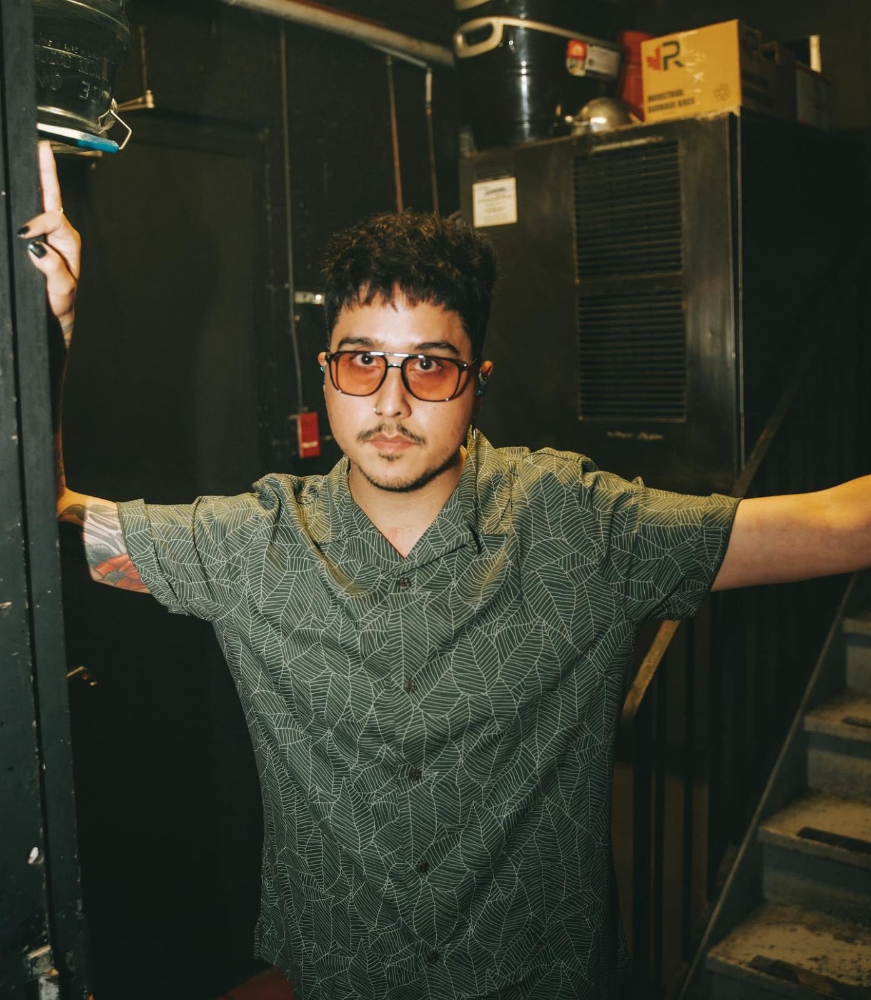

Andrew Dennis Biersack, conocido como Andy Biersack o Andy Black, es un músico, cantante, compositor y actor estadounidense. Nació en Cincinnati, Ohio, el 25 de diciembre de 1990. Es fundador y vocalista de la banda de post-hardcore, Black Veil Brides.

Chris Cerulli nace en la ciudad de Scranton el 17 de octubre de 1986. Señala que su mayor influencia fue Davey Havok vocalista de la banda AFI y también dice ser fan de artistas como Marilyn Manson y The Misfits.
Fundador, cantautor principal, tecladista y líder vocalista de la banda de rock Starset, conocido por la canción "Monster" la cual llegó al puesto #2 en el listado de Billboard estadounidense de Canciones de Rock Mainstream en mayo del 2017. Antes de fundar Starset, cofundó una banda llamada Downplay la cual comenzó como una banda de versiones de otras canciones. El grupo lanzó su primer álbum original llamado Saturday en el 2005.
Dead by April es una banda sueca de metalcore de Gotemburgo, formada en 2007 por Pontus Hjelm y Jimmie Strimell. La formación actual de la banda está formada por Pontus Hjelm (guitarras/teclados/voces limpias), Christopher Kristensen (voces sucias), Marcus Wesslén (bajo/coros) y Marcus Rosell (batería). A pesar de los muchos cambios de formación a lo largo de su carrera, tanto Marcus Wesslén como Pontus Hjelm se han mantenido consistentes desde su álbum debut.

Dayseeker es una banda estadounidense de post-hardcore formada en el condado de Orange, California, en 2012. El grupo está formado por el vocalista Rory Rodríguez, el guitarrista Gino Sgambelluri, el bajista Ramone Valerio y el baterista Mike Karle. Actualmente están firmados con Spinefarm Records y han lanzado cinco álbumes de estudio. Su álbum de estudio más reciente, Dark Sun, fue lanzado el 4 de noviembre de 2022.